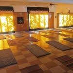

Escuela de Yoga Clásico · Buenos Aires

eyc — Escuela de Yoga Clásico. Dedicados a difundir las enseñanzas del Yoga y profundizar en el autoconocimiento. Clases, Profesorado, Retiros y Meditación en Buenos Aires.
Un espacio dedicado al Yoga en su sentido más profundo — no solo como práctica física, sino como camino de autoconocimiento y transformación interior.
Clases de Yoga Clásico para todos los niveles. Un abordaje tradicional del Yoga que integra posturas, respiración y filosofía — con horarios durante la semana y los sábados.
Formación completa para convertirte en profesor/a de Yoga. Un recorrido profundo por la práctica, la filosofía y la pedagogía del Yoga Clásico con certificación oficial.
Práctica grupal de meditación para calmar la mente, desarrollar la atención y profundizar en el autoconocimiento. Un espacio de quietud en medio del movimiento diario.
Grupos de estudio de Filosofía Vedanta — la base filosófica del Yoga Clásico. Para quienes quieren ir más allá de la práctica física y entender el Yoga desde su raíz.
Retiros intensivos de Yoga & Elementos en contacto con la naturaleza. Una experiencia transformadora para profundizar la práctica y reconectar con vos mismo/a.
Clases adaptadas especialmente para adultos mayores. Movimiento suave, respiración consciente y bienestar integral en un espacio cálido, seguro y acompañado.
eyc no es un gimnasio ni una app. Es una escuela con raíces — un espacio donde el Yoga se transmite como siempre fue pensado: como un camino de transformación personal basado en el autoconocimiento.
Escribinos por WhatsApp o completá el formulario y te contactamos para darte todos los detalles de horarios, modalidades e inscripciones.
11 6756-5041
Pizarro 6556, Buenos Aires
Yoga Clásico · Meditación · Profesorado